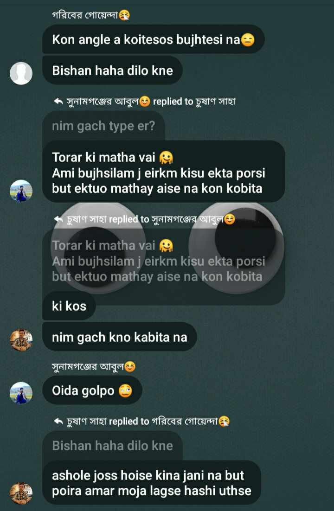
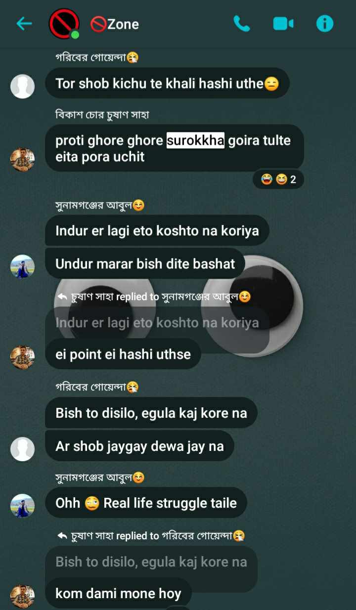
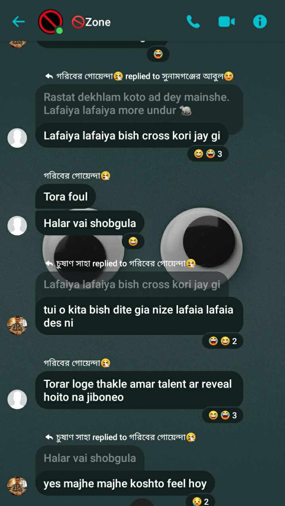
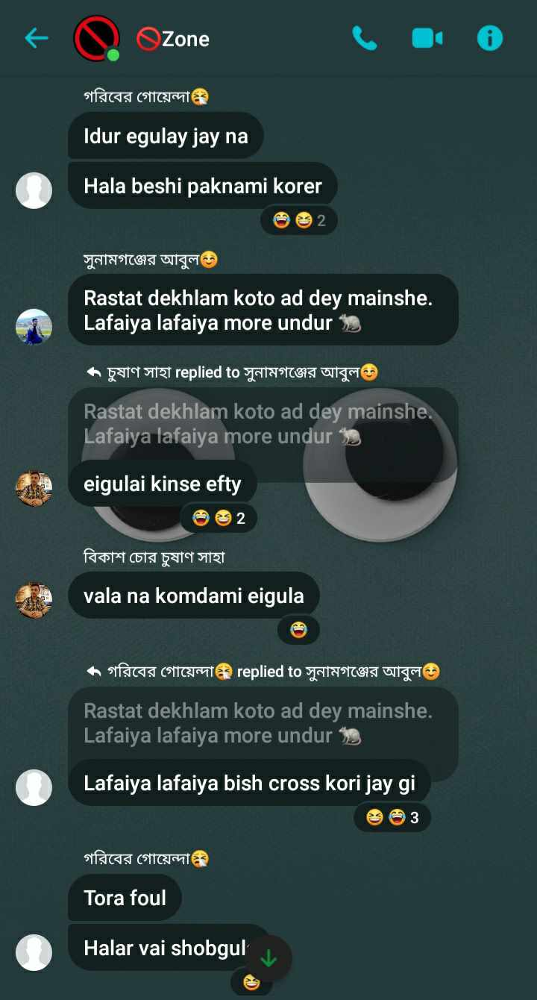
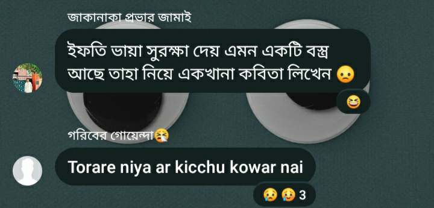
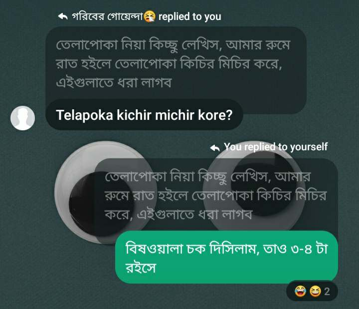
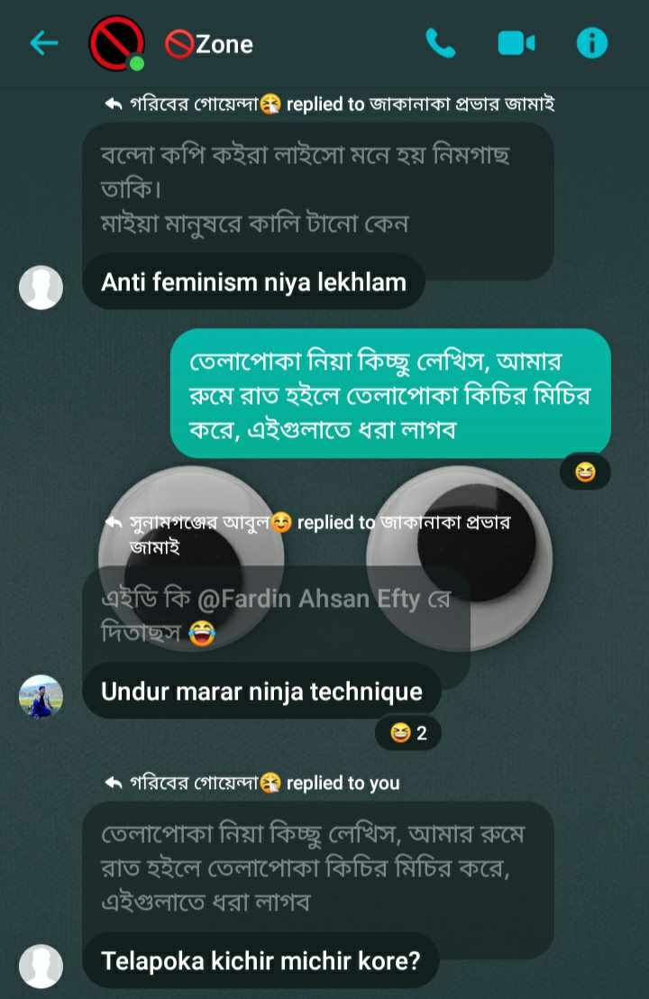
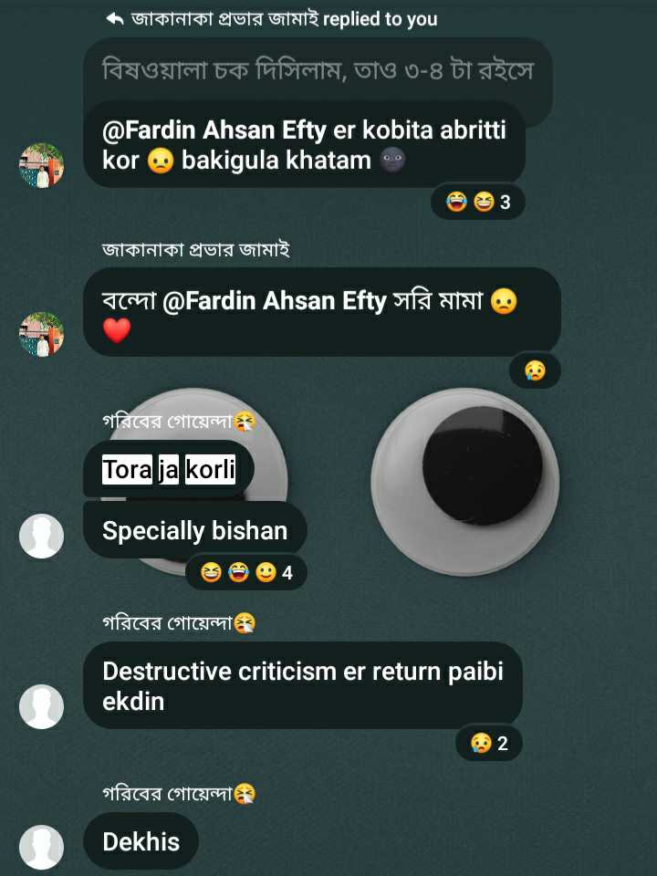

The visionary of “কবিতা মতান্তরে গদ্য” decided to share his work with his friends. Despite the masterpiece that "Surokkha" truly was, Fardin's friends did not show the appreciation it deserved. Their inability to grasp the profoundness and the unique blending of prose and poetry left Fardin's innovative work underappreciated within his close circle.
Faced with the lack of appreciation and understanding from his friends, Fardin made the decision to unsend his work from the group chat.








Shuvo, one of Fardin's friends, saw an opportunity amidst the underappreciation of "Surokkha". Realizing
the humor in the situation, he decided to create a meme out of the ongoing incident. This came to be
known as the "Surokkha Meme", marking the beginning of a new trend that would soon take over their
social circle and beyond.
Although the meme brought laughter to the group chat, Fardin did not share the same sentiment. The humor at his expense, stemming from his underappreciated passionate work, did not align with his feelings about the situation. Much like the woman in the video, Fardin's reaction was a mixture of surprise and disappointment.